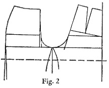
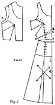

1942—Modern Pattern Design
by Harriet Pepin
Chapter 10—Lingerie
The exquisite bits of apparel belonging to the general classification of lingerie (pronounced lan-jer-ee) are an important part of milady's wardrobe. They include all pieces of underclothing and other garments designed especially for use in the privacy of her boudoir. The group includes nightgowns, slips, panties, brassieres, bed jackets, negligee, sleeping pajamas, corsets et cetera. The boudoir negligee is not to be confused with the "hostess gown." The former is intended for emergency while the latter is a modern substitute for any semi-formal dress except that it is usually purchased for wearing when entertaining guests. Lounging pajamas differ from sleeping pajamas. Although these flimsy bits of apparel appear fragile and impractical, they are indeed, quite the opposite!
Lingerie, first of all, is functionally designed. By this, the author means to say that the garment, aside from being made as beautiful as possible, must first be perfectly cut to provide a minimum of bulk but a maximum of comfort. Most lingerie must withstand repeated launderings. It therefore may be beautiful, but the fabric must still be as durable as possible. When the functional points have been created, then whatever beauty is added must be added without loss to the functional value of the garment.
Corset, brassiere and lingerie designers become highly specialized in their field. Probably designers have labored more diligently over the design for a girdle or a slip than any designer has struggled to create a dress or coat. Women want a smooth-fitting slip, and although they may require dresses made to their measurements, they still expect to buy their slips ready to wear. Hence the development of our bias slips. They adjust somewhat to the varying contours of women's bodies with a minimum amount of excessive wrinkles. A fortune was made on an ingeniously cut pantie which provided for the use of a gusset! Many manufacturers patent their designs for slip and underwear patterns and each year they add some improvements to the functional design and offer a new style made from that same basic pattern. Once a pattern is developed, the other changes are relatively simple.
As mentioned previously, most lingerie is made of washable knitted or woven fabrics. Occasionally some luxurious garment is shown in a shop and the sales girl will mention that it should be dry cleaned. But fabric manufacturers have developed such a fine assortment of truly beautiful washable fabrics, most lingerie may be laundered carefully with no disastrous results. Lingerie satin, crepe de chine, flat crepe, fine muslins and knitted silks and rayons and even washable satin and lastex are now to be had in popular priced lines.
The greater portion of lingerie is constructed by machinery. New attachments on the sewing machines have reduced the need for handwork and brought simulated luxury at popular prices. The fashion conscious woman, who can afford it, will want some of her lingerie wardrobe to be hand made, even though she may realize that will give it no greater durability. Most hand finished lingerie is made outside this country. In some countries, such as Porto Rico and the Philippines, our manufacturers have built large finishing factories where the gifted native women add their needlework artistry under the direct supervision of American stylists. This accounts for the fact that a hand finished garment may be purchased here at considerably less than ten dollars.
The person who is especially talented in the creating of intimate apparel can find excellent opportunities in the designing field. First must come the study of the need for functionalism in the cut of the garment and after that, ideas for beautifying the garment may be varied and interesting. Lingerie design follows trends suggested by dresses. Nightgowns show pronounced fashion changes. Underwear changes to meet the demands of dress silhouettes. A surprising amount of beauty is to be found in this highly selective field of women's apparel.
Panties, Bloomers etc.
In the past few years corset designers have perfected a modern garment known as the "pantie-girdle." This serves the purpose of the two garments and the sale of chemise and panties has lowered. However, you should study the two basic patterns which form the basis for most designs for panties or the modern version of the "bloomers" of past years.
Straight Panties
Straight panties are developed from the basic slack pattern draft. For the uncorseted figures of adolescent girls, such garments may be hemmed and an elastic inserted in the hem to give a snug fit at the thigh.
Quite recently a pajama manufacturer introduced a summer sleeping garment which had a pajama "short" instead of trouser. His designer placed inserts of elastic at each side of the back, and provided the control which was adjustable to waistline of wearer.
Notice that the silhouette of this pantie is that of a trouser. When elastic is used at the waistline, no placket is necessary. This basic pattern forms the basis for many such garments which are made from fine knit fabrics. Some models are re-enforced at the seat for more durability.
Simulated Circular Panties
Because this style of garment will adjust to fit more variations in figures, it is used more frequently. It is made from the semi-circular culotte pattern. The usual center front and back seams have been eliminated and the inside leg portion has been made into a gusset which is set into the slash placed at the center front and back of the main sections of the garment. The setting of the gusset requires expert machine operating. If you will inspect some models found in the stores, you will recognize the use of this cut, or variations of it.
1. Cut semi-circular culotte off at desired level.
2. Cut off inner leg sections at E-D and F-B.
3. Place these together with normal seam line G-H closed. Trace around them and eliminate this seam. Two gusset sections are required for the garment.
4. Original back and front seam lines C-D and A-B are then labeled to lay on fold.
5. F and E indicate point to which slash will be made in fabric.
6. Sew gusset sections on line E-F. Set into slashes in body of the garment.
Slips
As has been. The designs presented for your analysis are selected as being typical styles found available in almost any apparel store today.
 As
mentioned previously in this text, designers have spent countless hours of
effort in
designing the "perfect" slip which will adjust to the varying contours
of women's bodiesFig. 1 shows the "princess" style
which has vertical seams which achieve the fit in the garment. Because of its
many vertical seams this is a popular design for slips being
made to customer's measurements. The sweep at the hemline may be varied as
desired. In some cases, this style of slip is cut entirely on the bias with
the lower front and back panel cut double to make the garment "shadow-proof."
As
mentioned previously in this text, designers have spent countless hours of
effort in
designing the "perfect" slip which will adjust to the varying contours
of women's bodiesFig. 1 shows the "princess" style
which has vertical seams which achieve the fit in the garment. Because of its
many vertical seams this is a popular design for slips being
made to customer's measurements. The sweep at the hemline may be varied as
desired. In some cases, this style of slip is cut entirely on the bias with
the lower front and back panel cut double to make the garment "shadow-proof."
Fig. 2 shows the method for producing the pattern from the basic hip length bodice sloper. By introducing an extra dart at H, a close fit is assured at the top. This dart is then shifted over into the vertical seam extending down over the bust point. Extra hemline sweep is added as for gored skirts.
Fig. 3 shows the construction pattern with the discarded sections removed. To provide a snug fit under the breasts and around the diaphragm, draw a compound curve from B to C. D-E, being the same length of the original line B-C must be lengthened to equal the new curved line B-C. This is accomplished by slashing construction pattern horizontally at point A and the extra length provided in the final pattern by spreading the sections as needed.
The final pattern would be completed in the usual manner with grain indicators marked to intersect with the hip level line. Some designs provide for a double of fabric through bust area. This would be made in the same manner as a facing from final pattern.
The procedure used for making this slip is the same as that to be used when making any full length garment from the hip length bodice sloper. The front section being arranged to make the bust and hip lines follow the horizontal grain of the fabric will insure a well-hung garment. Later examples in coats and one piece dresses will give further practice in the use of this procedure.
A similar style, cut on the bias, eliminates the side seams and inserts elastic fabric in area of waistline to cause garment to fit snugly at side waist.
Bias "Bra-top" Slip
Variations of this slip are to be found in most stores. It is usually made from a knit fabric or, when cut from lingerie crepe or satin, it is made on the bias of the fabric in the skirt portion at least. Because there are no vertical seams for fitting, it is best worn by the woman who has no intense curves.
The upper section may be designed with the simple double bodice top with adjustable shoulder straps or it may be shaped as shown here. In some cases the position of the darts will vary or the control may be divided with darts extending from raised waistline and the underarm seam.
The control is shifted in the bodice sections as illustrated. The working dart is introduced in the front skirt section and then that is shifted to the hemline to provide walking room. The normal basic dart appearing in the back skirt section is also shifted in a like manner.
Vertical guide lines are then drawn upon the final pattern paper and the front and back sections are arranged as shown in Figs. 2 and 3. Note how the shaping waistline seam is revealed when the two sections are placed against the guide line. In the front section, line D-C is the new raised waistline. The distance from B to C can be made about one half that distance shown between E and F. The remainder of the center front length is absorbed in the bias cut.
In the back section—because the new waistline starts from the normal waistline—the new seam can absorb all the normal fitting provided at the waistline in the slopers.
If a bias slip is cut too narrow through the thighs and at the lower edge, it will have a tendency to creep up when the figure is in motion. When such slips are ironed, the iron should follow the grain of the fabric by ironing in a diagonal motion. This will help to restore the shape the garment had originally with each washing. Any garment which is cut with a bias skirt will gradually sag when hung in a closet. The only way to avoid that problem is to store it flat in a dresser drawer.
When you have cut the pattern for this slip and have tried your results in muslin, it will become obvious that, because of the lack of vertical seams, this garment may not be made to fit as closely and smoothly as the previous princess design. In observing dresses in stores, you will notice that the high priced sheer dresses will have well cut slips accompanying them. The less expensive garments will have slips which may be made with less material, time and labor. The custom designer should select about the same method. The slip will vary with the final cost of the garment being made for the customer. The better the slip fits, the smoother the dress will look on the customer.
You may see a similar design to this slip which has a panel in the back which is cut on the straight of the fabric. That style will improve the fit and not add too much cost to the finished garment. In some instances, the back panel is cut on the bias. At this writing, lingerie designers are using a new elastic fabric which is set under the arms at the waistline. This may solve the problem for the customers who want a closely fitted slip with no placket at the waistline.
Novelty Slip:
This style of slip introduces four seams, each one of which contributes to the fitting of the garment. By laying the pattern on a true bias of the fabric, this will aid in adjusting the fabric to the contours of the figure. It is given here in a simple form, as a problem for cutting, but it might be trimmed with sections of lace if desired.
Because this slip has only four seams instead of the six fitting seams of the princess style, it would be best suited to a slender woman or a full figure with a large waistline.
1. Start by making the construction patterns for front and back bodices as shown in Figs. 2 and 3. Draw in the desired line of the top as shown by the dotted lines. Cut away the remaining area and discard.
2. The back dart is eliminated by folding it in and pinning. Draw in the angle of center front dart and add the small fitting dart at the top.
3. Fig. 4 shows how the bodice section should appear when darts have been folded and control shifted to center front.
4. Use the four gored skirt pattern which you studied on page 185 as the basis for the skirt portion. Arrange the sections as shown in Fig. 4.
5. If you wish additional walking room at the center front, this may be added as is shown by dotted line A- -B. Seam allowance would then be added as shown.
6. The shaped facing would be made from the final pattern. As the facing is cut narrow at the back, it would serve as a trimming and yet finish off the top of the garment. For durability, the facing could be cut much wider, if desired. If the slip were to be made of dull surface lingerie crepe, the facing cut of satin would give an added note of interest and trim.
7. The center back zipper closing would facilitate getting into the garment.
A satisfactory test may be made of this design by cutting one-half the garment and then pinning or basting the side seams together.
NOTE: This style of slip would be adaptable to an evening length garment. This completes your study of methods used for cutting slips. From this information, you should be able to originate a wide variety of designs as desired. The method used for making these full length garments is that used in making coats or dresses which have no seam at the normal waistline. Space will be devoted to those in Chapter Eleven.
Brassieres
During the late nineteenth century and the early twentieth century, the camisole, or corset-cover, was worn under blouses and dresses. Women who had an overdeveloped bust wore a blouse which had a fitted lining or a tightly fitted corset-cover to maintain a smoother contour. Shortly after the last world war, the social order changed. Women bobbed their hair, entered the business world and gained their right to vote. As is usually the case, fashions interpreted the new era and skirts became shorter and the "boyish" figure became the vogue. Waistlines were indefinite, but the bust was confined with the new "bandeau brassiere."
Fortunately, this unhealthful garment was abandoned as the natural figure returned to fashion. The scanty garment remained, but it was changed to conform to the natural contour of the breasts. Since then, the corsets and brassieres have improved until today, a woman may find a wide choice of styles to suit her specific requirements in almost any price bracket. Not only does the 1942 brassiere mold the shape of the breast but it is designed to support it as well. It has been designed to serve a definite functional use. It has also been designed to bring comfort and serviceability. The variation in price usually determines delicacy in fabric, perfection of cut and the minimum amount of bulk.
Much credit should be given to the diligent designers who have specialized in the foundation garments. They usually work with models as they must study the problems of countless types of women. Usually they have had experience selling foundation garments before they entered the creative phases of the work. Some understudied experts for several years before they became head designers. They have contributed greatly to the enviable figures of American women.
Because there is such a wide choice of styles available in the stores, one seldom has occasion to create a single garment. Although most large cities have a few shops which specialize in foundation garments and negligee where a large stock of ready-to-wear is carried, there is little occasion for "made-to-measurement" service. A few small alterations will usually be all that is necessary.
Herewith are shown a few representative types which show the functional designs which are created to meet needs of customers:
Fig. 1: Was designed especially for the 1940 low, V-necked evening gowns. Elastic edges on the sides of the front assure modesty to die wearer.
Fig. 2: is a style designed for the teen age girl with partially developed bust. It is light weight and cup shaped feature gives firm line desired.
Fig. 3: is designed for the woman with the overdeveloped, sagging bust. Note stitched under portions to give support where needed. Some such designs show light boning instead of re-enforced stitched area.
Fig. 4: is a lacy creation having wide center front panel to divide the breasts. This foundation garment would be best for the gown having drapery in bust area.
Fig. 5: was designed in 1938 for wearing with popular strapless evening gowns and bathing suits. Note gusset of elastic.
Methods given for producing bathing suit tops would be used to cut patterns for brassieres. Special model form should be used in such instances.
Nightgowns and Panamas
Like all well designed clothing, sleeping garments of today are less bulky than in our grandmother's day. Yet they are functionally designed to give comfort to the wearer. In the previous era, only women of wealth could afford nightgowns which were flattering but today, thanks to our able woven and knit fabric manufacturers, the modern woman may have flattering sleeping garments of delicate fabrics and colors and yet they will be serviceable and moderately priced.
Assuming that the fabric is beautiful to the eye, the next point of consideration is the cut. And there must be comfort. Comfort as to warmth and as to the cut of the garment. Most of the garments sold in the stores are "year-round" models. However, if you will notice, in the hot summer months, stores feature nighties and pajamas made from extra sheer cotton and synthetic fabrics which are actually cooler than the usual garment. Now that American women have become actively interested in skiing, hunting, camping and rugged ranch living it is natural that the primitive heating conditions of some mountain cabins will create a demand for extra warm sleeping garments. As a result, there has been an increasing demand for fleecy nightgowns and a subsequent revival of cotton flannel. A modern fabric used to meet this demand is a "brushed rayon" which simulates wool in appearance.
A few general rules will apply to designing the pattern for a nightgown. The garment should be wide enough in the skirt to permit freedom of the limbs while sleeping. If sleeves are to be used, they should be cut to provide the necessary freedom of the arms. Whenever possible, the waistline should be adjustable. This may be accomplished with a tie-belt which runs through the loops placed at the waistline under the arms. Or, a set-in waistline band at the front may extend on into a sash belt across the back. Drop shoulders are not popular because they have a tendency to tear out with the movement of the arms. Tiny straps are not practical because they cannot be made durable enough. Therefore the sleeveless types, with wider areas over the shoulders, are the more popular. If short puffed sleeves are desired, some designers leave the sleeve unattached under the arm, finishing off the garment and the sleeve with a tiny, firm binding. This will add the freedom needed.
Like dresses, nightgowns fall into three basic classifications: the strictly tailored, mannish types; the semi-tailored and the distinctly dressy, elaborate feminine types. Designs for nightgowns usually follow the current trends in dresses to some degree. When special interest is being focused upon hemlines, then you may expect to see nighties having flounces on the hemline. When puffed sleeves were in vogue, both nightgowns and bed-jackets had puffed sleeves. The same is true with capes, circular skirts et cetera.
In recent years, sleeping "ensembles" have found a ready market. These include the nightgown with an additional negligee which matches. Some are padded and quilted to give added warmth. Others may be made with a contrasting lining for extra modesty. Combinations of nightgowns and pastel flannel dressing robes which match are found in the more expensive lines.
An ingenious refugee from war-torn Europe was confined to an American hospital for a few weeks and while there she was so annoyed with the purely functional hospital nightgowns which reach just below the knees and tie in the back, she designed similar models of silk which included the same functional features. She soon had more orders than she could fill!
Sleeping Pajamas
When sleeping pajamas were first adopted by women, many of the first models were not comfortable. The pattern makers—in an attempt to make the garments loose and roomy—made the mistake of lowering the crotch without widening the leg of the garment proportionately. The results were most unsatisfactory—like wearing a glove with too short fingers. In the chapter in this text which explains the method used for lowering the armscye, you were taught that when the armscye is lowered, the sleeve must be widened at the biceps accordingly. The same is true when the crotch is lowered on a trouser-like garment. The "Frontier Pants," being cut high in the crotch to serve a functional need for horseback riding are proportionately tight in the thighs. However, the most comfortable sleeping pajama has the crotch depth of the average slack suit. It will provide ample room for movement of the limbs while sleeping.
Except in some special designs for children's garments, pajamas are usually made two-pieced. Due to the variation in torso lengths in adults, the one-pieced garments would only fit a limited number of people. Hence the popularity of the two-pieced models. Actual sleeping pajamas are usually quite simple in cut and trim to insure ease in the laundering. Lounging pajamas, which may be dry-cleaned, are sometimes quite elaborate.
Hostess Gowns
Entirely unlike nightgowns, sleeping pajamas or negligee, this group of garments are a form of apparel for wear in the entire home. Lounging pajamas resemble a dress more than the sleeping garments and the fabrics are luxurious as to color and texture. Some women want them to harmonize with the color scheme of the house. They are modern in origin, filling an existing need for suitable lounging apparel for casual evenings at home whether guests are being entertained or not.
The hostess gown is full length, like an informal dinner dress. When it has been selected to harmonize with the home decorative scheme, it is reserved in the wardrobe for that purpose. Velvet, plain and figured silk crepes, metallics and other glamorous fabrics are usually used. The hostess pajama-suit serves a like purpose and would be made of similar fabrics.
The "house coat" or "breakfast coat" is an outgrowth of the hostess gown. Women enjoyed the hostess gown because it enveloped them completely. When women started to wear cotton slacks for the busy hours of the morning, a designer started producing the cotton house coats which proved to be far more attractive and they soon rose in favor. The modern housecoat is usually made of gingham, cotton pique or calico and it should be crisp, fresh and becoming. The same pattern which might be used for a velvet hostess gown might be used to make a cotton house coat.
Women of moderate means can now enjoy the luxury of extra garments of this
type. Modern business girls find that it gives them a definite mental lift
to shed their business clothing and slip into an inexpensive garment of this
type after a difficult day at the office. It is quite correct to wear when
receiving casual drop-in visitors and, due to its simple cut, it may either
be laundered or dry-cleaned inexpensively. Every woman and girl should try
to manage to possess at least one such garment in the wardrobe. There is nothing
quite so depressing as to see one trailing around in a flannel bathrobe or
a jaded negligee. A few yards of twenty-five cent cotton percale can produce
a most attractive garment which will endure for months and be a constant joy
to the wearer.